标准 320×568／360×640／390×844 稿按“已扣除原生顶部安全区后的有效画布”绘制；标有 safe46 的 320×568 图是整窗顶部占用 46px 的额外压力样例。前端仍须读取实际微信安全区和菜单矩形。
局内 · A2
先看 320 长规则与实体按钮；按钮状态仅依据是否按过，不提前揭示禁按答案。

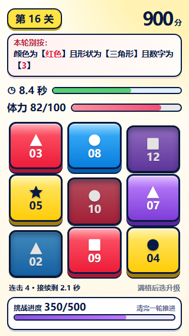
3×3 · 320×568长规则、900分、体力、挑战进度

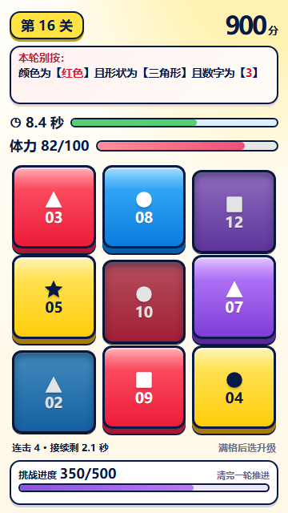
3×3 · 360×640标准中屏

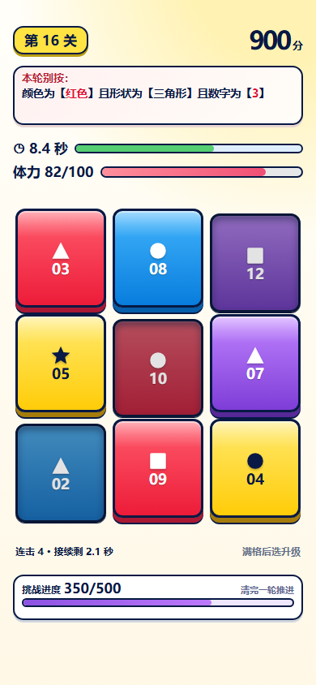
3×3 · 390×844长屏组距重新分配

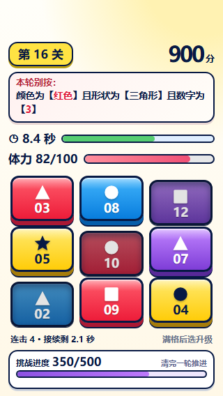
整窗 320 · 顶部占 46px规则、九格、状态仍完整

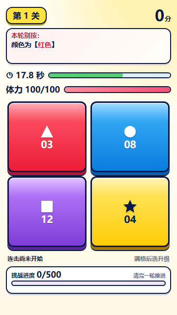
2×2 · 第1关开始／重试后的布局示例

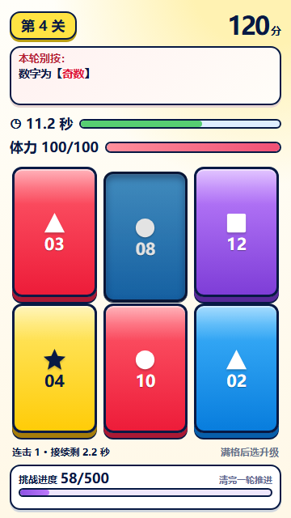
2×3 · 第4关已按一格，120分

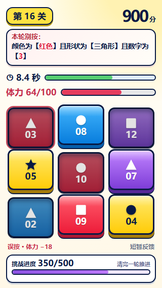
非致命误按红三角下沉，体力82→64

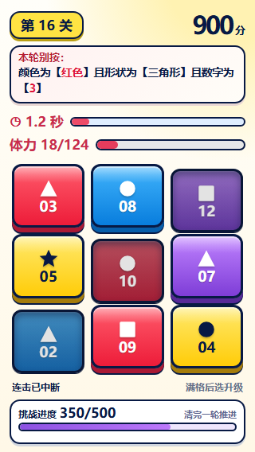
时间／体力临界局部变色，无全屏闪烁

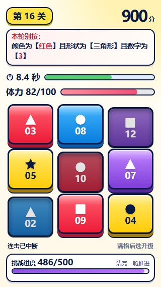
挑战接近满格486/500，不提前弹升级

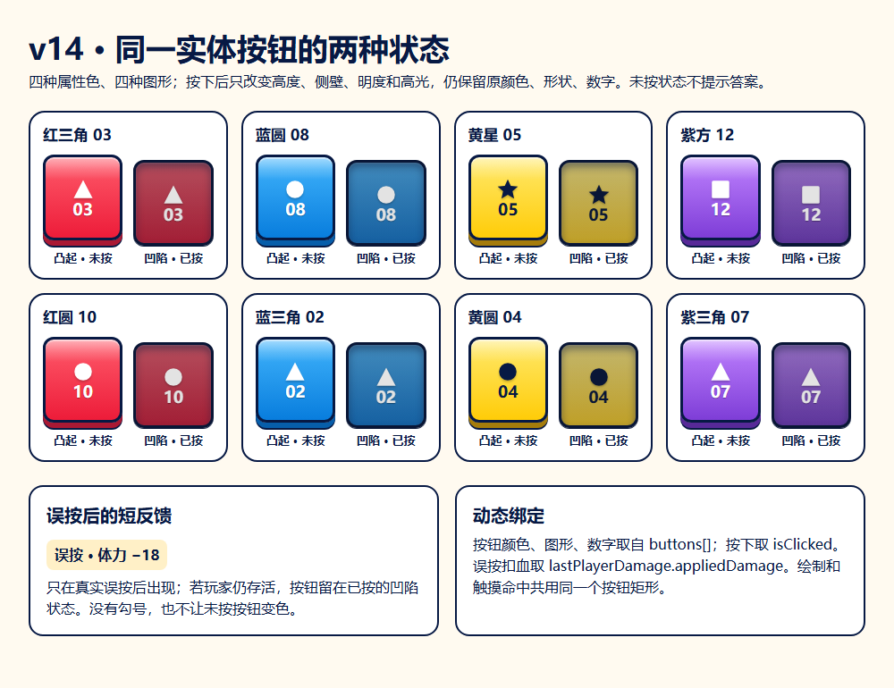
按钮状态组件板四种颜色、图形、数字；凸起／凹陷同一材质
首页、升级与结算 · A1 / A3 / A4


辅助体验与状态 · B1–B4 / S1–S9

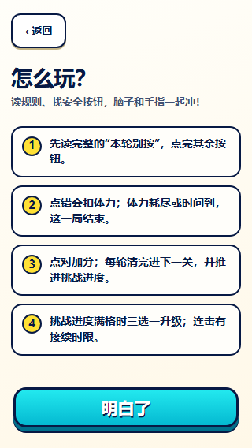
玩法帮助 · B1新增采纳；首页次级入口

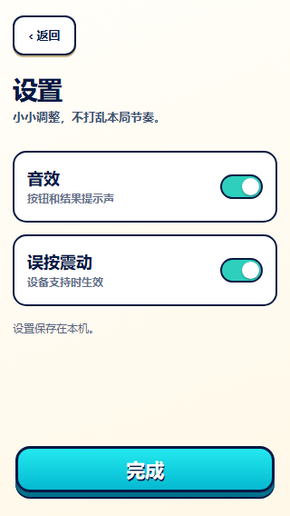
音效／震动 · B2新增采纳；本机独立偏好

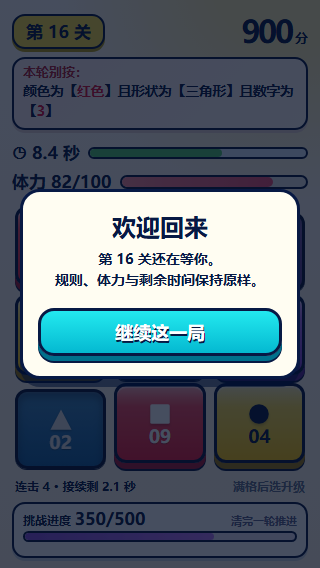
返回前台 · B3仅计时中的局内

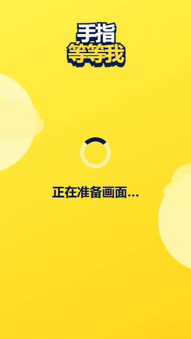
资源准备 · S1不显示虚构百分比

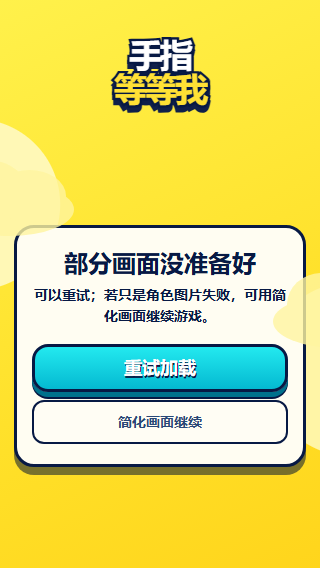
资源失败 · S2重试／非关键图片几何回退

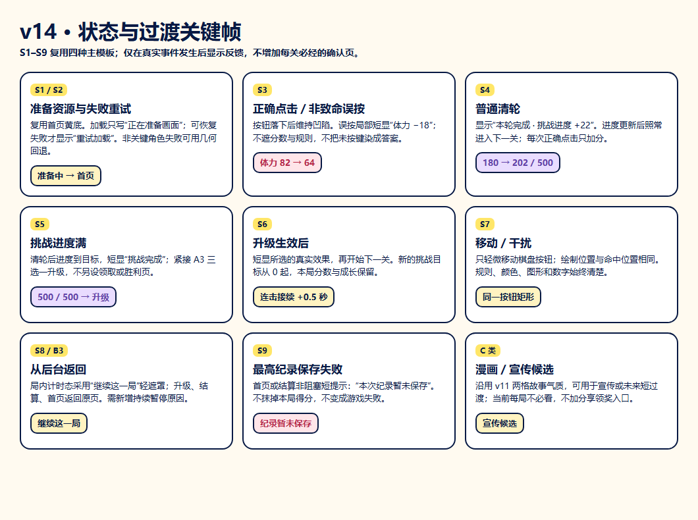
状态与过渡关键帧清轮、挑战满、升级生效、移动、后台、纪录保存失败

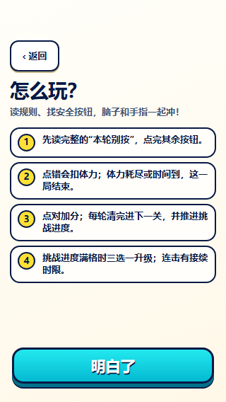
帮助 · 顶部安全区压力返回键和底部按钮完整

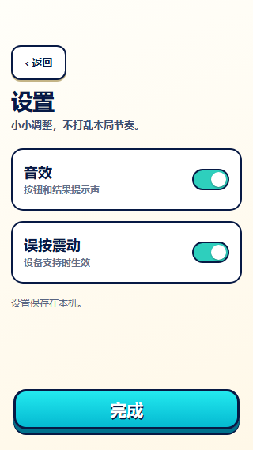
设置 · 顶部安全区压力两项开关完整

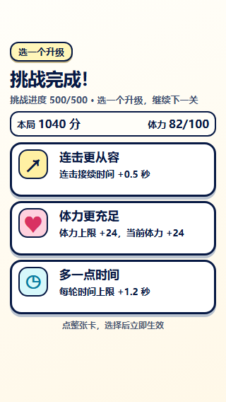
升级 · 顶部安全区压力三张卡完整

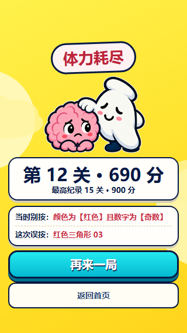
结算 · 顶部安全区压力双操作完整